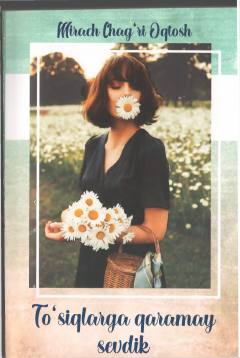

TQTo'siqlar ortida ham sevgi bor — hissiy turk romani o'zbek tilida.
Bu kitob turk yozuvchisi Mirach Chag'ri Oqtosh qalamiga mansub bo'lib, Nodirabegim Jamshid qizi tomonidan o'zbek tiliga tarjima qilingan. Asar to'siqlar va qiyinchiliklarga qaramay sevgan, ishonch bildirib oxiri alam bilan qolgan odamlar haqida. 2021-yilda 'Factor Press' nashriyotida chop etilgan va Turkiyada keng muxlislar ommasiga ega bo'lgan kitoblardan biri hisoblanadi.